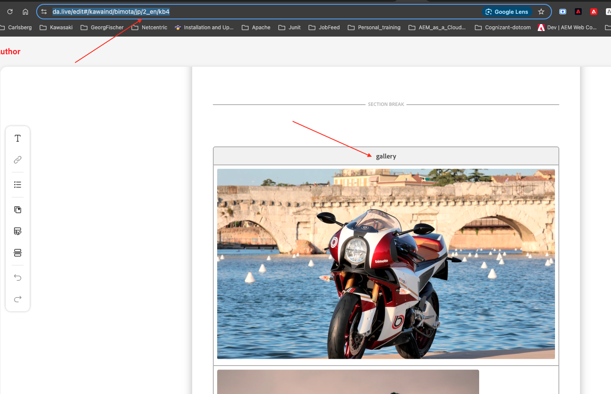
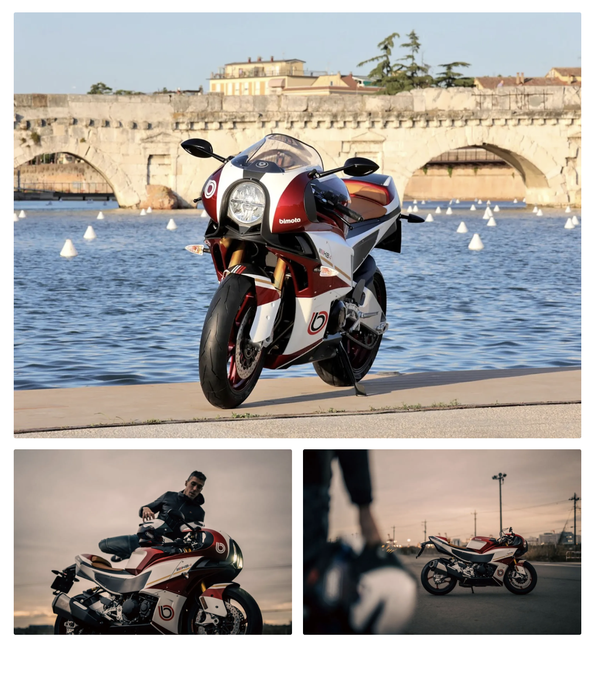
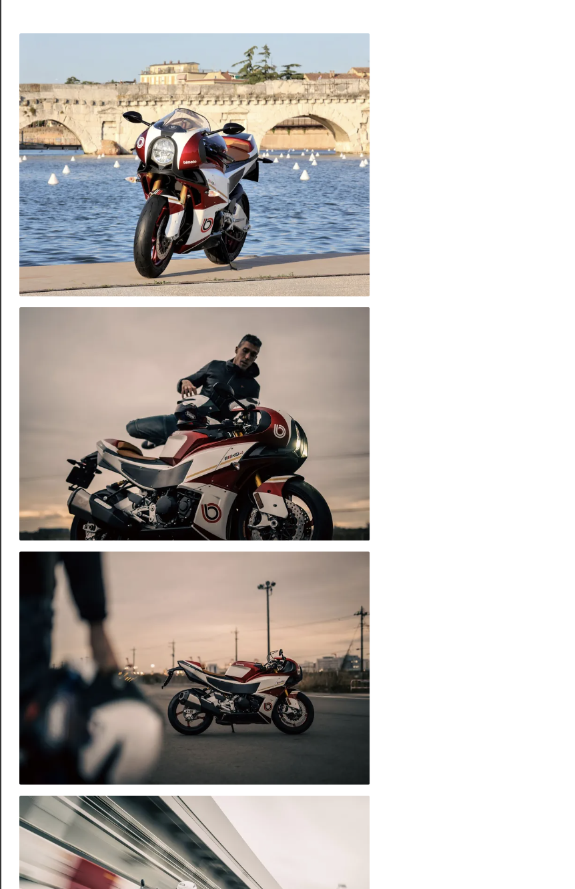

Gallery
Image container that alternates 1-image and 2-image rows on larger screens; stacks on mobile.
The gallery component is a container for images. The rows alternate by having 1 image and 2 images for larger screens (>768px). Images stack below one another for mobile devices.
Adding the block to a page
Two ways to add it:
- Copy from an existing page — open an existing page under your respective country folder that already has a Gallery block, copy it, and paste it into the document where you'd like the gallery, then add your preferred images in the columns.
- Use the Library — in da.live, click Library in the block toolbar, then choose Gallery from the list of available blocks, and go to the specific file to edit it.
Always use a 'section break' after each block to separate it from the previous block.
The block skeleton
The empty skeleton is simply a Gallery header cell followed by a series of empty rows — add one image to a row for a full-width single image, or two images in the same row for a side-by-side pair. Keep alternating single/double rows to get the alternating layout shown below.
Desktop vs. mobile result
On desktop (>768px), a page with a Gallery block set up as one large image followed by two smaller side-by-side images renders exactly that way — one full-width image, then a row with two images sharing the width equally.
On mobile, the same content simply stacks: every image renders full-width, one directly below another, in the same top-to-bottom order they were authored in.
What you fill in
| Gallery header row | Just the word "Gallery" in the first cell — marks the block. |
| Single-image row | One image — displays as a large single image on desktop. |
| Two-image row | Two images placed side by side in the same row — displays as a 2-up pair on screens wider than 768px. On mobile, every image in the gallery stacks full-width, one per row, in order. |

Copying the Gallery block from an existing page, or inserting it from the da.live Library panel.

Desktop view: one full-width image followed by a two-image row.

Mobile view: every image in the gallery stacks full-width, in order.
Copy/paste snippet
| Gallery | | |---|---| |  | | |  |  |